Languages interprétés, de haut niveau, typage dynamique
Permet la programmation objet et fonctionnelle
Usage général, communautés spécialisées
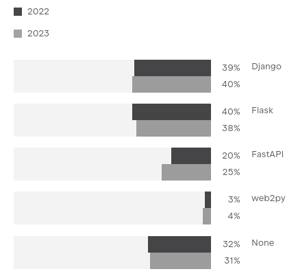
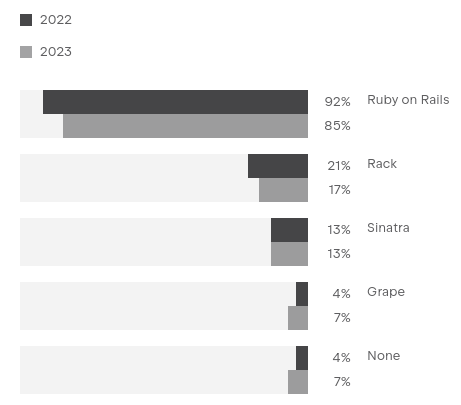
Source : jetbrains.com/lp/devecosystem-2023
Deux frameworks très proches
Développement d'applications web
Utilisation de bases de données, ORM inclus
Systèmes de templating, HTML rendu côté serveur ou API
Deux variations du pattern MVC
Open source
Deux succès
Django
Rails
Création
2005
2004
Licence
MIT
BSD
Contributeurs
2566
5035
Github stars
79k
55k
Github repos
1.7m
2.3m
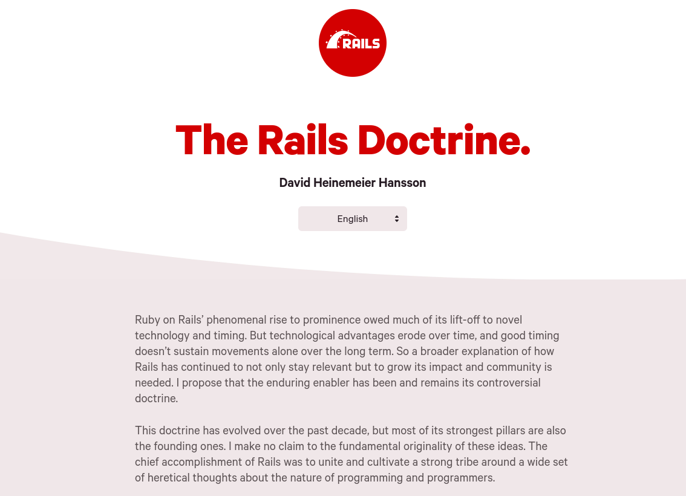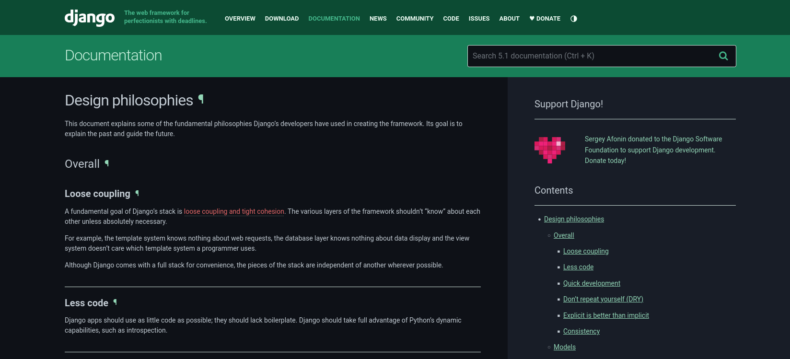
Convention vs Explicit
Django : "Explicit is better than implicit"
Rails : "Convention over configuration"
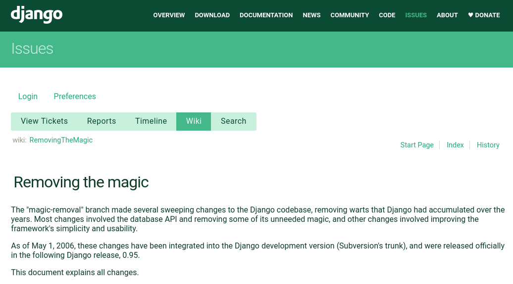
One person framework
A toolkit so powerful that it allows a single individual to create modern applications upon which they might build a competitive business.
DHH, "The One Person Framework", 16/12/2021
Asset Pipeline
Action Mailer
Une exception : l'interface d'admin
"The Rails way"
La solution préférée de la communauté
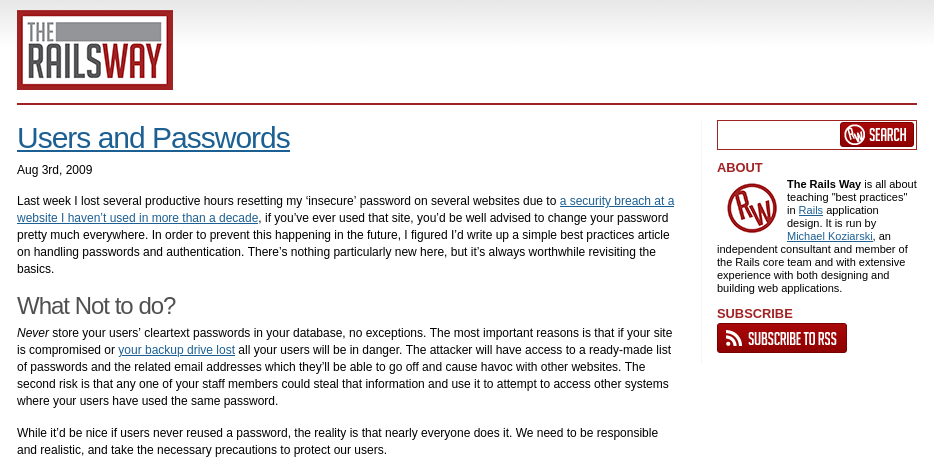
Brève histoire de Ruby on Rails
2004 : Création de Rails, extraction de Basecamp
2006 : Apple intègre Rails dans Mac OS X Server
2008 : Twitter se désengage de Rails
2022 : Formation de la Rails foundation
David Heinemeier Hansson
aka "The Drama"
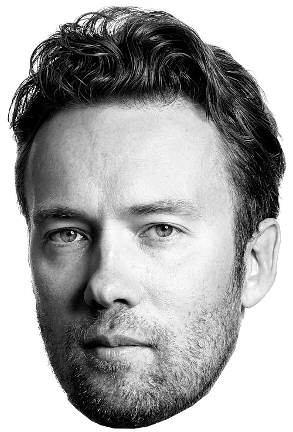
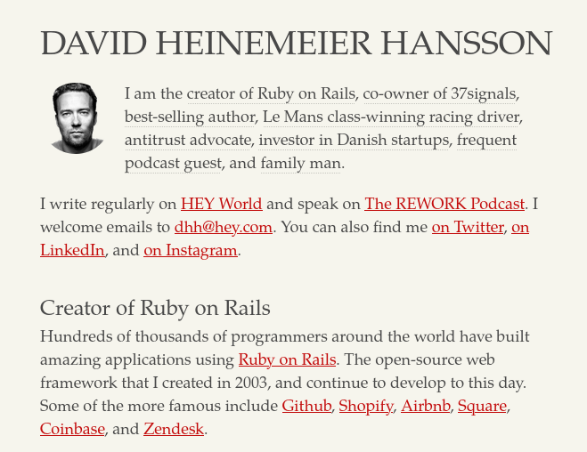
2021: crise chez Basecamp
Création d'un conseil DEI(Diversity, equity, and inclusion)
Une liste de noms crée en 2009
La direction supprime le conseil DEI
1/3 des salariés partent
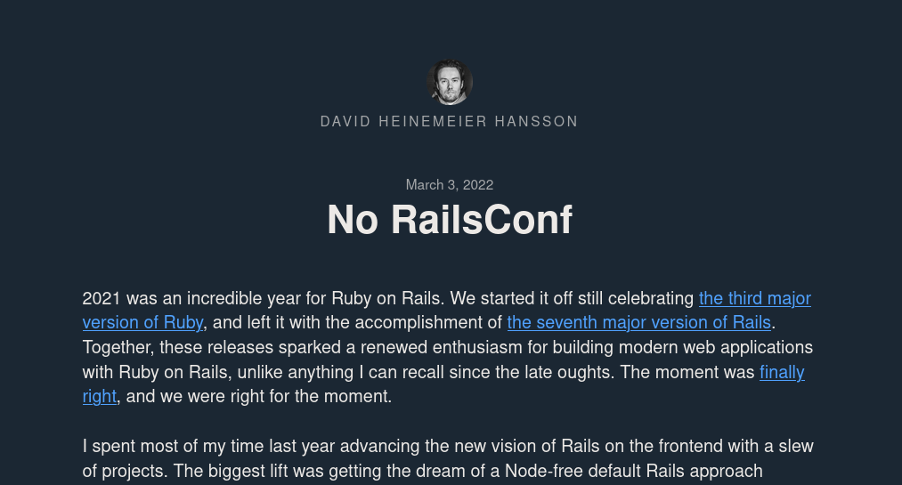
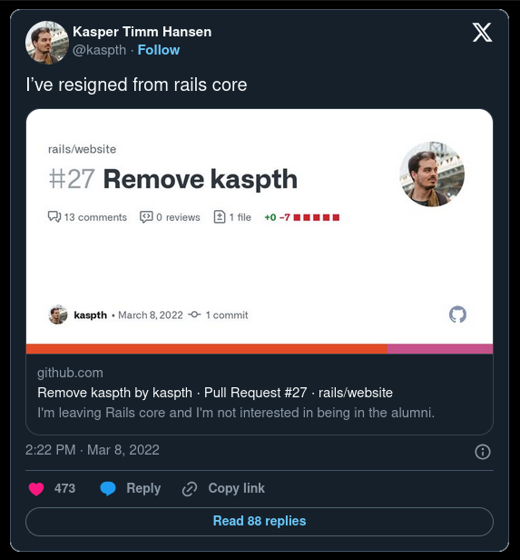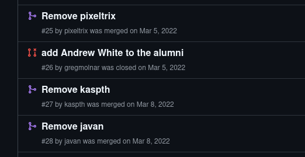
Brève histoire de Django
2003 : Création de Django, dans la rédaction du Lawrence Journal-World
2008 : Formation de la Django Software Foundation (DSF)
2014 : Adrian Holovaty et Jacob Kaplan-Moss renoncent à leur titre de BDFL
2020 : Mise en place du système de gouvernance actuel
Gouvernance Django
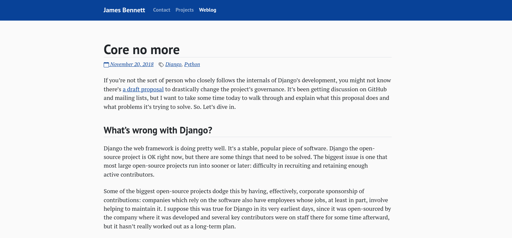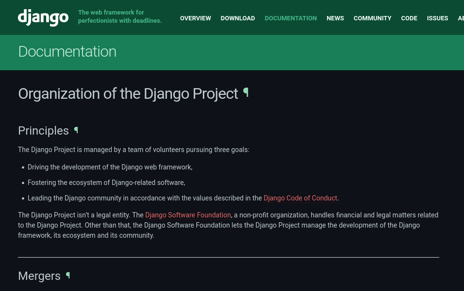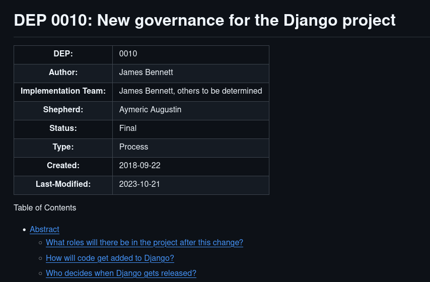Explication gouvernance Rails ?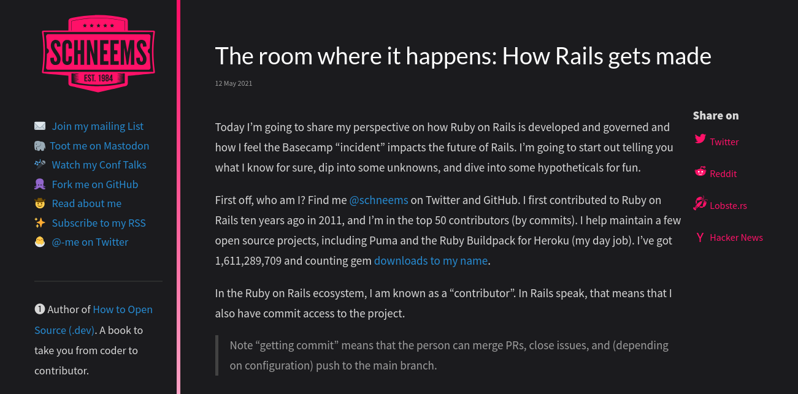
Django a une gouvernance, Rails a une doctrine
Elitism is good, when it comes to open source. You absolutely want projects to be driven by the people who show up to do the work, demonstrate their superior dedication and competence, and are thus responsible for keeping the gift factory churning out new updates, features, and releases. Productive effort is the correct moral basis of power in these projects.
DHH, "Open source is neither a community nor a democracy", 16/05/2024
Kings, presidents, and BDFLs have their place, and there are models of community that are aided by having them. But the longer I observe the Django community, the more I realize that our community doesn’t need them.
Jacob Kaplan-Moss, "Retiring as BDFLs", 13/01/2014
Part of the Rails’ mission is to swing its machete at the thick, and ever growing, jungle of recurring decisions that face developers creating information systems for the web. There are thousands of such decisions that just need to be made once, and if someone else can do it for you, all the better.